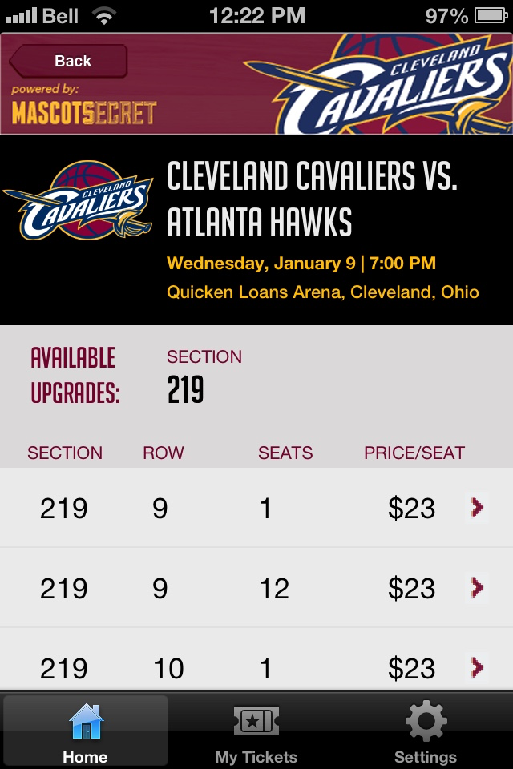
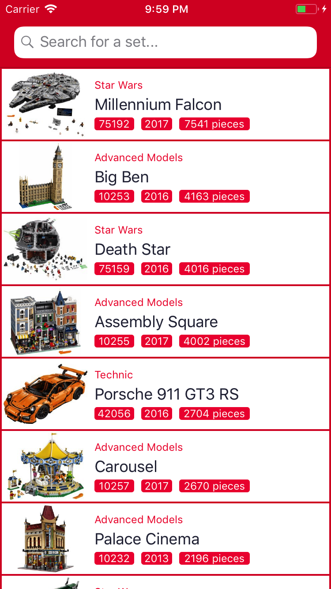
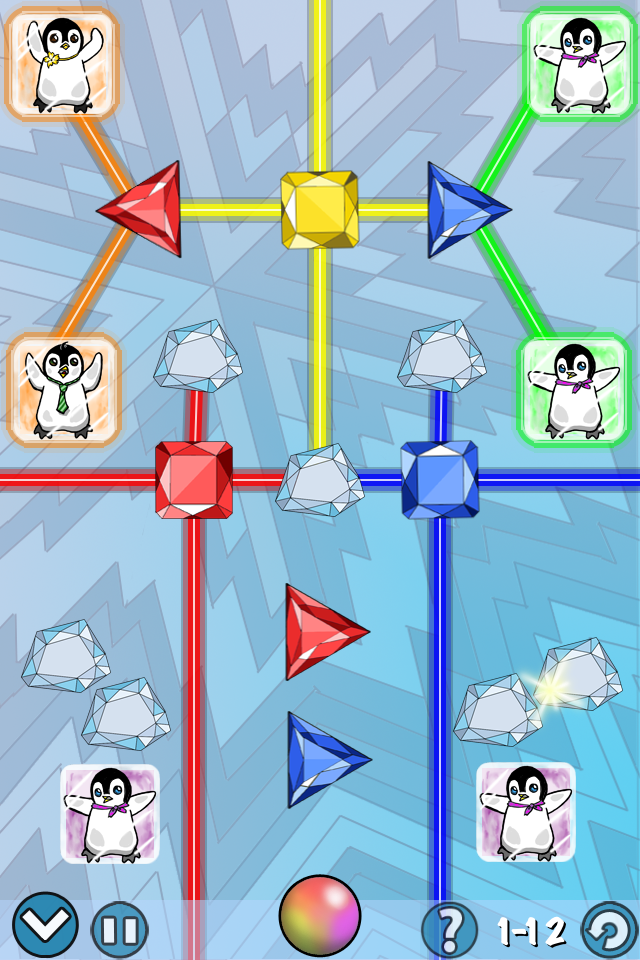
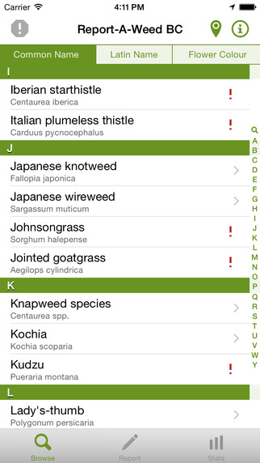

Mascot Secret
MascotSecret is a fan engagement and inventory management system that lets venues and sports teams upgrade seats and improve fan experiences at live events.
- Allows users to browse available inventory and upgrade to better seats at live sporting events.
- Accurately scans ticket barcodes and credit cards using the iPhone's camera.
- Utilizes custom backend to interface with payment gateway and multiple ticketing systems.
- Developed for teams across multiple major leagues, including the Cleveland Cavaliers, Houston Rockets, Cleveland Indians, and Buffalo Sabres.
BrickSearch
BrickSearch is the fastest and easiest way to find any LEGO set ever made! You can view photos of sets, piece counts, minifigures and building instructions. You can add sets to your collection, and keep a list of your favorites too!
- Powerful yet simple search allows users to quickly locate any LEGO set ever made.
- Photo gallery allows users to swipe through and examine photos of individual sets.
- Building instructions for sets can be opened in the user's choice of PDF viewing applications.
- Users can add sets to their collection and wanted lists, and find places to buy desired sets.
- Loved by users -- the vast majority of app store ratings are overwhelmingly positive (5 stars)!
- Available now on the app store!
Ice Crisis
The penguins are trapped in colored ice blocks and you are their only hope for escape! Only matching colored laser beams are strong enough to break through the thick ice. Use crystals of different shapes and colors to aim the beams at the matching ice blocks and free the penguins!
- 4.5/5 star rating with over 300 user ratings in the USA and over 500 in the UK!
- Intriguing and challenging puzzle game with charming, hand-drawn artwork.
- Attractive, functional and intuitive user interface.
- Users can earn achievements through Game Center, and purchase hints via In-app Purchase.
- Developed using UIKit, Core Animation, and Core Graphics.
Duquesne University Athletics
The Official Duquesne University app is your go-to source for Dukes fans everywhere. It offers you breaking news, team schedules and rosters, seat upgrades, interactive social media and more. Get the latest Dukes information you need anytime you want it!
- View rosters for the university's basketball teams.
- Keep up to date on the team's social media feeds.
- Browse the calendar for scheduled games, and add them to My Games for quick viewing later.
- Get tickets to games, check out sponsors, or make a donation.
Cloud Diver
Soar across the sky and zip through the clouds with only your parachute to slow you down! Become a Cloud Diver and see how long you can free fall through the atmosphere while avoiding incoming birds. With real physics and a different gameplay experience every time you play, no two sky dives are ever the same!
- One-tap interface allows for simple and intuitive parachute control.
- Procedurally generated scenery, obstacles, and powerups -- Every game is unique!
- Realistic impact physics through the use of the Box2D physics engine.
- Developed using the cocos2D game engine, and utilizes Apple's Game Center for high score leaderboards.
- Users can view and share a screenshot of their demise at the end of every game.
Epic Tab
EpicTab is a simple way to keep a running total of bills between you and your facebook friends. With the EpicTab app you can eliminate the fuss of messy IOU’s, and easily track the amount, location, and time of bills split amongst friends.
- Sign-in with Facebook and start tabs with your friends.
- Set favorites for quick, one-tap access to frequently tabbed friends
- Add information to each tab event, including notes and location (automatically determined by device GPS).
- Utilizes custom PHP/mySQL backend for cloud storage of tabs and easy access from any device.
- Developed using multiple frameworks and APIs, including UIKit, MapKit, CoreLocation, Facebook Graph, and others.
Report A Weed BC
The Report-a-Weed BC app lets you report weed sightings anywhere in BC, in just a few simple steps. Your report will go to one of BC's invasive plant specialists, who will coordinate follow-up activities with the appropriate local authorities. The app can be used off-line to create submissions as well; simply click ‘Submit’ and the report will be sent as soon as you are back in cell coverage. There’s a map of BC that displays the 500 most recent submission details, and you can search through images of all invasive plant species on the list.
- Browse a comprehensive list of invasive species, by common name, latin name, or flower color.
- View photo galleries for each species and zoom in to compare with samples in the field.
- Submit reports of invasive species sightings, along with the latitude and longitude provided by the device GPS, to the Invasive Species Council of British Columbia.
- View a map of recent reported sightings throughout the province of British Columbia.
- Developed using UIKit, MapKit, CoreLocation and other frameworks.